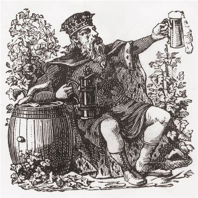
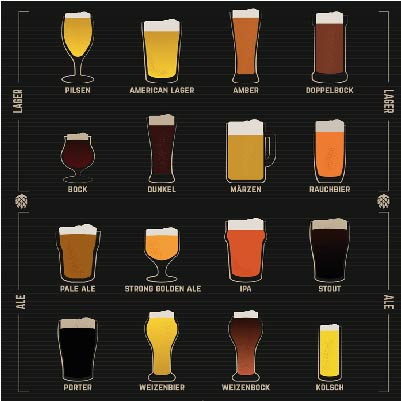
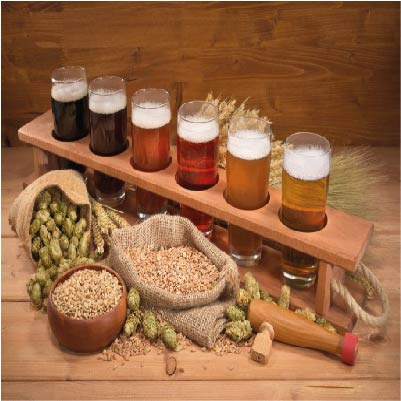

NOTICIAS

Historia de la cerveza
Las primeras cervezas eran de tipo ale, es decir, de fermentación a temperatura ambiente causada por la levadura Saccharomyces cerevisiae...
segui leyendo

Tipos de cervezas
Existen dos tipos principales de cerveza en las que podemos incluir casi todas las cervezas que existen: las cervezas Ale y las cervezas Lager...
segui leyendo

Que es la cerveza artesanal
La cerveza artesanal o cerveza artesana es un tipo de cerveza sin aditivos ni conservantes y sin pasteurizar. Están vivas y son un producto evolutivo, ...
segui leyendo